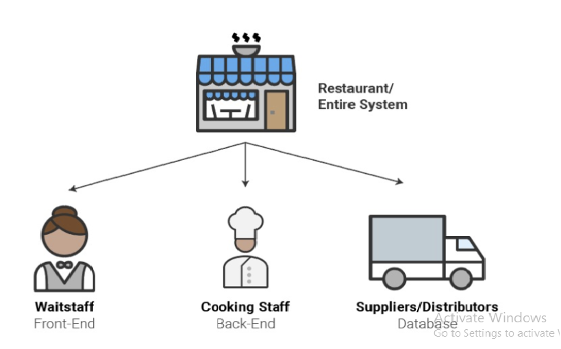

Lesson 1 • The Anatomy of the Web (Frontend vs. Backend, Client-Server model).
Goal: Understand how the internet works and the roles of the people who build it.
1. What is Web Development?
Web development is the process of building, creating, and maintaining websites.
Think of a website like a house:
The Foundation & Structure (HTML): The bricks, walls, and beams.
This is theskeleton of the website
The Decoration & Paint (CSS): The colors, furniture, and style. This makes the
house look beautiful and comfortable.
The Plumbing & Electricity (JavaScript): The systems that make the house functional—turning on lights, flushing toilets, or opening doors. This is how the
website "behaves" and responds to you.
Key Concept: The web is essentially a conversation between two machines: a Client (your browser) and a Server (the computer holding the website files).
(End of Page 1. Click Next to continue reading).
2. The Two Parts: Frontend vs. Backend
Building a website requires two different teams working together:
A. The Frontend (The "Dining Room")
This is the part of the website you see and click on. When you visit a website, the colors, fonts, buttons, and menus you see are all "Frontend."
Real-life Example: Think of a restaurant's interior design and the menu you see on the table.
B. The Backend (The "Kitchen")
This is the "hidden" part that works behind the scenes. . It handles things like saving your password, processing paymentsts, or finding products in a giant database.
Real-life Example: Think of a restaurant's kitchen and the processes that happen behind the scenes to prepare your meal.

Figure 1.1: A diagram showing the Client-Server model.
3. How the Web Works (The "Waiter" Analogy)
How does your computer show you a website? It uses the Client-Server Model.
The Client (You):Your web browser (like Chrome or Firefox) is the "Client." You are the hungry customer sitting at the table
The Request: : When you type google.com and press Enter, you are placing an order for a "menu."
The Waiter (HTTP): The Internet works like a waiter. Your request travels over the internet to a server.
The Server: This is a powerful computer located somewhere else in the world. It
acts as the "Kitchen." It receives your request, finds the data you asked for, and prepares the "meal."
The Response: The server sends the data back to your browser, and your browser "plates" it by displaying the website on your screen.
4. Why use a "Framework"?
In the beginning, we build websites manually (like building a house brick-by-brick). But
as websites get huge (like Amazon or Facebook), building everything manually is too
slow and messy.
The Framework (React):Think of this as a Modular Prefabricated House Kit.
Instead of making every single brick, you use pre-made, high-quality "blocks"
(components) that snap together perfectly. It makes building complex things
faster, safer, and much more professional.
Key Takeaway: You are learning to be both an Architect (who designs the
structure) and a Chef (who creates the functionality) for the digital world. By
the end of this course, you won't just be building pages; you will be building
reliable digital systems.